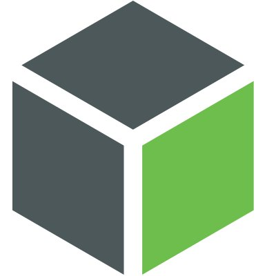
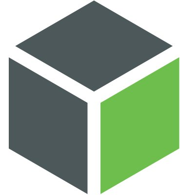

EDUCATION

Bachelor of Engineering, Aerospace, Co-op Option
Stream C: Electronics and Systems EngineeringCarleton University, Ottawa, Ontario
September 2017 – April 2023
- Graduated on April 2023
RELEVANT SKILLS


 



Technical Skills
- SOFTWARE:
- Advanced Design System, Xilinx Vivado, Verilog, PSPISE, ELVIS II, NI myDAQ, OrCAD, AutoCAD, Lua Script, C++, MATLAB, Python, HTML/CSS, JavaScript, Git, MySQL, SQLite, Django, LaTex
- HARDWARE:
- Oscilloscopes, Vector Network Analyzers, Spectrum Analyzer, Function Generators, FPGA, Raspberry Pi
WORK EXPERIENCE
Nanalysis: High Performance Benchtop NMR Spectrometer

NMR Electronics Manufacturing Intern (On-Site)
Calgary, Alberta
May 2021 – September 2022
- Applied electrical troubleshooting skills to track and solve electronics power current consumption issues on PCB boards and verified received and transmitted of RF signal to the other boards using oscilloscopes and function generators during assembly of NMR units
- Conducted testing, calibration, and assembly of the NMR's RF board, Amplifier board, and PCB board using Vector Network Analyzers, ensuring high-quality performance and functionality
- Utilized soldering techniques to mount surface-mount ceramic capacitors onto PCB board for the purpose of calibrating, troubleshooting, tune and match, using Vector Network Analyzers
- Conducted analysis of magnet stability logs using MATLAB, generating reports to the manager
- Maintained and updated assembly and automated testing documents for manufacturing process of NMR units, ensured accuracy and completeness of the documentation
- Communicated with vendors for parts and issued BOM's for procurement
- Designed an inductor winding bar with a 0.12mm gap thread on AutoCAD
Calgary, Alberta
September 2022 – April 2023
- Leveraged Lua scripting to improved automated testing scripts, created automated testing scripts to replace manual testing process, eliminated unnecessary code and ensured compliance with the latest specifications while working remotely
- Developed automation scripts using Python, including a magnet automated baking script, a temperature offset calculation script, and an auto-insert data script, streamlining process and increased efficiency
Republic of Korea Army: 701 Special Assualt Commando

Squad Commander and Strategic Operational Staff Sergeant
Paju, South Korea
May 2015 – February 2017
- Utilization of Microsoft Office for inventory management, and working with confidential documents with operation Office
- Leading the team by explaining and taking the responsibility of their basic safety drills, various military procedures as training gradually grows more challenging
PROJECT
September 2022 - December 2022
- Applied microwave circuit theory to design a band-pass filter using the ADS
- Developed an edge-coupled filter with Tuning, Optimization, and Linecalc tool in the ADS to satisfy the specific specification of the return loss and gain
- Created layout for manufacturing in a PCB design board, and successfully tested
September 2022 - December 2022
- Developed the amplifier with the microwave silicon bipolar junction transistor (BFP450)
- Designed DC bias network through BFP450 datasheet, and value of resistors and capacitors calculated for specified power supply were used
- Adjusted gain and return loss by tuning tool in the ADS, and created layout for manufacturing in a PCB board

September 2022 - December 2022
- Developed an autonomous cart with line tracking system to release dummy for constant releasing points, using Python and OpenCV
- Designed an optimized line tracking system for high-speed and high-accuracy performance, utilized a camera's line detection system with Pi Cam to create a less complex and more streamlined system

September 2022 - December 2022
- Designed interior and exterior of concept business jet using CATIA for 3D modeling
- Developed integrated propulsion system designs in compliance with Canadian Aviation Regulations
- Created LaTeX Reports for test plans that cover methodologies, fail-safe procedures, evaluation and validation of design performance
September 2020 - December 2020
- Developed an egg timer using Xilinx Vivado and Xilinx ISE, based on digital logic to display seven-segment LED on FPGA using Verilog
- Utilized up/down counter and shift register theories to ensure accurate and efficient timing functionality
- Installed written code onto an FPGA and tested the egg timer's functionality
January 2021
- Portfolio site that provides detail information about work and project experiences
- The service provides people's emotion and preferences of mint chocolate through face recognition
January 2021
- Based on Python language Upload/Download servie web is created through storing data into database provided by Django with SQLight
- Upload/download service successfully built with php with using server and database are provied by Xampp
Network-attached storage(NAS)
Web Personal Cloud ProjectSeptember 2020 - December 2020
- Re-design NAS OS based on linux, and create HDD as a database
- Through storing data provided by NAS, website and application are stored and currently being built
January 2020 - April 2020
- Design interior and exterior of concept business jet following aircraft's requirements, include aerodynamics, performance, and structure systems using CATIA for 3D modelling
- Filling report using by MS Office with manuals of existing jet models, aerodynamic papers, summarization, and created custom MATLAB scripts to analyze aerodynamic data
September 2017 - December 2017
- Producing this project using CREO and 3D printer to re-design plug outlet helped to establish easier connection and develop the flaws in the previous plugs
- Presenting to Teaching Assistant’s in small group’s provided more focused assessment, thus individuals needed to work together in preparing detailed information
July 2018 - August 2018
- Worked in a group to deliver a prestation explaining solar power plants general structure, and visualized into animated model using by software Microsoft suite
- These space solar power plants are introduced in order to improve communication skills and presentation to non-engineering people in order to familiarize them and build their knowledge with the engineering world
- Researching knowledge is enhanced by browsing through logbooks, preparing for facts to be presented in presentations and filing reports with summarizations, papers involved
EXTRA-CURRICULAR ACTIVITIES
September 2018 - April 2020
- Building a network of South Korean University students, each tasked specific to their major to plan on projects with Carleton Engineering students working specifically on 3D designs
- Collaborating Carleton Engineering students with design students from Hong-ik University (South Korea) by sharing their ideas and merging these designs with our engineering skills
- Report annual Budget planning, and scheduling yearly event using by MS Office
- KSNA web server project is implementing with engineering and computer science students
ACHIEVEMENTS AND REWARDS
Alexander Rutherford Scholarship
September 2014
Founded Korean Student Network Association
September 2018
Military Awards
2016
- Achieved three immensely important training recognition awards in 2016, these awards being; Consolidated guerrilla training, Cold weather training, Counter Infiltration Operation. All these can only be achieved through producing the best results in their genre’s